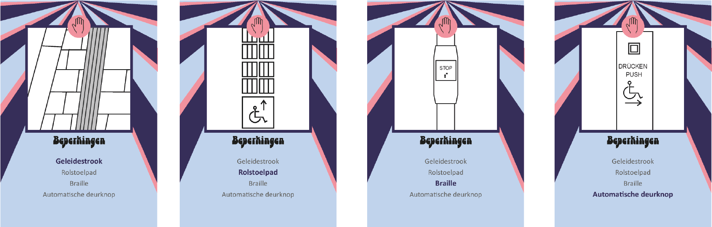
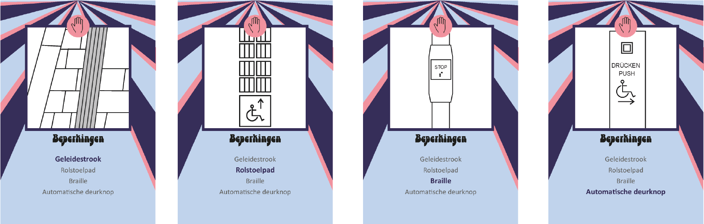

Met ontwerpen 1 zijn wij naar Berlijn geweest. Daar hebben we verschillende foto's moeten maken van visuele interfaces. De bedoeling was om kwartetten te maken met de foto's. Samen met een groep vn 12 mensen voegden we de foto's samen om zo een compleet kwartetspel te maken.
Het thema dat wij bedachten was "Beleef Berlijn". We besloten om de afbeelding in vector bestanden om te zetten zodat elke kaart een nette afbeelding had. Doordat wij elke keer veel afwezigen hadden besloten wij de opmaak vrij te laten aan de hand van een template. Iedereen kreeg sets toegewezen en een combinatie kleuren die gebruikt moesten worden. Dit zorgde voor veel leuke verschillende soorten opmaak en maakte het een vrolijk kleurrijk kwartetspel.
Dit zijn de kaarten die ik heb opgemaakt:
 

De volgende stap was het doosje maken. Wij hebben dit gedaan met dun karton en holografisch inpakpapier gecombineerd met een stickersnijder voor de opdruk. De leraren waren niet heel tevreden, maar ik ben super trots op het werk wat wij geleverd hebben.